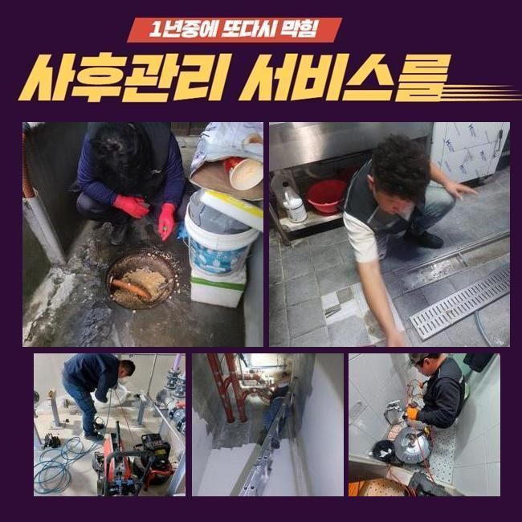
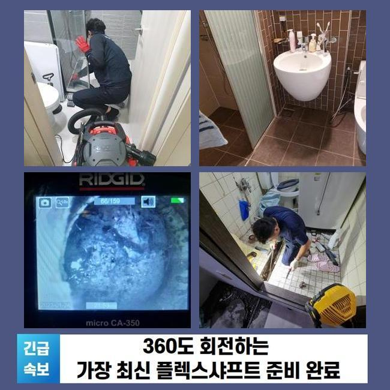
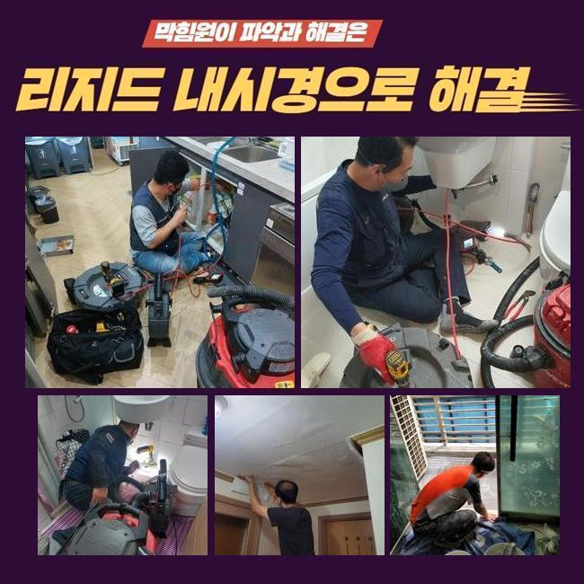
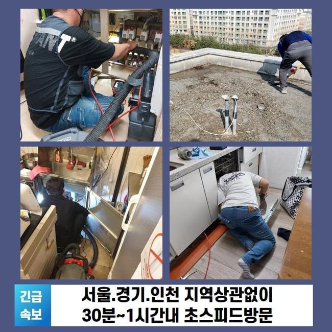
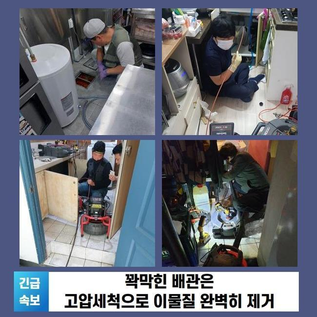
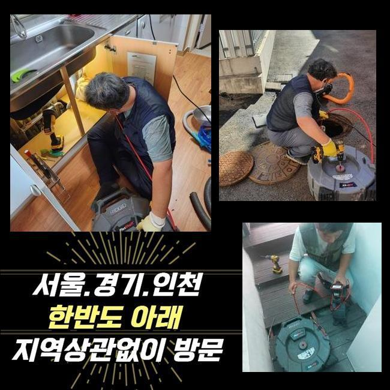

🏠 관악구 중앙동씽크대역류 신원동 하수관고압세척 물샘전문업체
용인 원동 싱크대막힘 전문 시공 후기

📋 작업 개요
- 위치: 용인 원동, 원동, 용인
- 서비스 유형: 싱크대막힘, 하수구막힘, 배관막힘, 맨홀막힘, 집수정막힘, 누수수리, 역류해결, 배관청소, 고압세척, 악취차단
- 작업 일시: 2024. 10. 27. 13:07
- 업체명: 하수구수사대 (010-5615-2118)
🔍 문제 상황
관악구 중앙동씽크대역류 신원동 하수관고압세척 물샘전문업체
날마다 사용하게 되는 하수는 장소마다 다른 독자 노선이 있는 게 아니고 한곳에 모여서 이동합니다
이어지다보면 결국에는 하나의 관로에서 집합한 뒤 바깥으로 나가면서 배수과정이 실시되는데 이러한 사실을 좀 더 알기 쉽게 정리하자면 세대에서 발생하는 하수가 한데 섞이는 메인 관로가 있다는 것은 어느 곳에나 마찬가지겠죠
이러한 메인 파이프가 혼선이 생긴다면 여러 곳들 가운데서 몇 호실은 거꾸로 치솟는 일까지 생겨버리죠
하수의 이상 현상이 시작되면 조속히 대응을 해야만 건물 속의 여러 호실에 관한 손해를 예방할 수 있습니다
접수를 하면서 들은 바로는 메인하수구를 꼼꼼하게 정화 업무를 해왔지만서도 여전히 1층 호실에서 역류 증세가 거듭 발생한다 하셨고 메인배관의 조사를 맡겨주시게 된 것입니다
전용 검사과정을 거쳐보니 야외 설비까지도 막혀버린 까다로운 사안으로 느껴졌습니다
일단 중앙부의 문제점을 극복해주기 위해서는 야외 맨홀을 우선 처리해야만 진입이 가능할거라 판단 내렸습니다
사이즈가 넓은 곳이라서 차량을 가까운 곳에 위치시키고 미리 준비해온 고압세척기 스타트 버튼을 눌러 세팅한 후 긴 호스를 가져와서 불순물을 없애주는 세척 과정을 통과하게 됩니다
단순한 초기 단계 장비로는 미미한 변화만 만들게 되는 한계에 봉착할 때가 있는데 이럴 때는 강한 압력의 물살을 이용해서 이물질을 공격해서 딱딱한 것들도 분해하고 착 달라붙은 점액질까지 깨끗하게 청소를 해낼 수 있습니다

🔎 원인 분석
💡 전문가 진단: 정밀 진단 장비를 사용하여 슬러지의 고착 여부를 판명하고 타격/세척 작업을 실시했습니다.
대형 사이즈의 하수구를 간소화된 장비들로만 청소를 이어가는 것은 힘이 많이 드는 반면에 거듭 이어가야 하니 얼른 극복하는 것이 현실적으로 어려우므로 고압세척이 절실하다고 판단된다면 바로 이러한 환경에 대해서 설명하고 상황에 따라서 자유자재로 씁니다
무슨 장비를 쓰는지도 미리 동의를 구한 뒤에 돌입하니 안심하세요!
기기의 힘으로 고압의 물을 발포하고 있으므로 붙어있던 모든 이물질들이 순간 접착력을 잃고 해체되고 마는 것이죠!
잘게 쪼개진 이물들이 내려가는 시간을 둔 다음에 물줄기를 다음 대상을 할당하여 청소를 이어갔습니다
텀을 충분히 주지 않고 계속해서 물살을 적용해 버리다가는 집 안의 하수구로 솟구쳐 오를 수 있답니다
아니면 배관에 데미지가 가거나 빈 틈이 생기게 되어 누수 현상까지 연결되는 등의 우려스러운 상황이 될 수 있으니 안전을 염두에 두고 작업해요
제법 오래 작업했으나 차단된 현재의 증세가 나아질 기미가 없어서 내시경 장비를 내려보내서 사유를 추적해 나갔습니다
배관 형태가 뒤틀린 곳에 상당수의 오염원들이 축적되어있는 실태를 발견하게 되었습니다
완전히 꺾인 구조는 아니지만 휘어진 형상이기 때문에 내부에서 내려가는 물살도 틀리는 구간이기 때문에 여기의 장애물들을 제대로 추스려지지 않으면 조만간 비슷한 사건이 터지고 말 것입니다
샤프트 기기를 작동시켜서 결합되어버린 이물질들의 분해를 실시했습니다
초반부에는 장비가 유입될 완전히 가로막혀 있었던 모습이었으나 과정을 이어가며 노폐물들을 걷어주고 빼줌으로써 더 밑으로 진출이 가능해졌어요

🔧 작업 과정
사태가 심각한 막힘 건이라면 한 장소에서만 청소를 실시하는 것 이상으로 안팎 모두에서 장비를 함께 써서 청소작업을 하는 것이 보다 효과가 좋아요
탁월한 샤프트의 힘을 빌려서 노폐물들을 부숴나갔고 옥외는 고압세척 공정을 맡아서 실시하여 초반에는 엄청나다고 느꼈던 오염부위를 점차 좁혀주는 공법으로 처리를 해줬어요
심한 막힘사건이었기에 옥외 집수정이랑 가까운 1층에서 물이 넘쳐버리는 끔찍한 일들이 계속 생성되었던 것이었죠
물길이 좀처럼 수월하지 않다면 어느 파트에 이물들이 잔여했는지 끈기를 갖고 탐구하는 것이 중요해요
처음 왔을 때는 하수까지도 아예 멈춰버렸을 정도로 막힘이 심화된 케이스로 보였고 장기화 되었던 것인지 화석처럼 굳어있어서 간단하게는 보이지 않았습니다
쉽사리 해소되지 않겠다 여겼던 곳들도 샤프트 장비로 막힌 쪽이 관통되고나서 그 다음부터는 편안하게 청소 프로세스를 담당할 수 있었습니다
이물을 제거하고도 고압 세척을 재시작해서 고여있는 대형 물질을 남아있는 미세한 입자들을 정리정돈한다는 일념으로 호스를 안으로 밀어넣어서 물살로 관로를 닦아주었습니다
습도 높은 내부에서 장기간 계속 누적되어 왔기 때문에 만들어진 고약한 냄새가 나는 물질들도 동반하여 자라나는데 고압수 세척법을 실시한다면 이 점들도 탈피가 가능해요
분해된 파편들이 바깥으로 나가도 고압세척 방식을 통하여 세심한 마무리 작업까지 맡아서 진행을 해드리니 안심하셔도 된답니다
고압 세척기의 능력을 바탕으로 하수구 속에 고여있던 오염의 근원들을 척결할 수 있었습니다
쏘아낸 물들도 정상 경로로 내려와서 집수정으로 차차 유입되는 것이 보였으며 물의 오염도도 깨끗해지는 모습을 목격하게 됐어요!
내려보낸 물이 온전하게 막힘 없이 나오는 것을 본다면 더는 더러운 물질이 없고 지난 배관에 대한 시공도 성공으로 이끌었다고 확신을 가져도 좋습니다!
작업 도중에도 거대한 이물질들이 분출될 수 있다는 사실도 염두에 두고 필터링해서 대비책을 세워주어 더럽힘 없는 작업을 해줬어요
고압세척을 담당해주는 업체를 물색하시고 계신다면 최우선적으로 어떻게 처리할지를 세부적으로 상세히 전해주는 곳에 설비를 맡기는 게 좋습니다
장비 라인업이 다 있는지 사실도 사전에 판단을 해야 하며 장비의 종류나 강도를 조절하는 응용력을 확보했는지를 탐색하는 것이 필요하겠죠
강력한 수준의 힘을 가진 고스펙이기 때문에 파급효과도 상당할 것이므로 능통하게 조작을 할 줄 알아야해요
아마도 쌓인지 꽤나 된 것인지 들어간 물질의 장르도 수많았고 썩은 내도 진동을 하고 있었는데요


✅ 작업 완료
수도시설의 활용이 금지되는 불편함 역시 극심하겠지만 환경이 불쾌하게 변하는 등의 난감한 고질적인 문제까지 벌어질 수 있으니 유의해야 합니다
공통적으로 설비 시설이 기능적인 역할을 담당하지 못한다면 이웃한 곳의 설비까지도 데미지를 주게 될 수 있겠죠
실내 하수관의 정기적인 청소도 중요하겠지만 대형 설비인만큼 전문가에 의한 검사를 자주자주 받아보셔야만 안전한 건물을 유지하는데 이롭습니다
하수구와 연관된 이슈가 도래한다면 단독주택 혹은 다중 건물이나 영업시설 등 어떤 곳이라도 이것저것 재지 않고 방문해서 고쳐드립니다
다방면으로 수를 써보아도 개선이 안된다고 부정적인 인식이 되신다면 처리를 미루지 마시고 빠르게 연락만 주신다면 말끔히 복구해 드리겠습니다!




⚠️ 베란다 누수 및 방수 관리 방법
- ✅ 비가 많이 올 때 창틀 주변이나 아래층 천장에 얼룩이 생기는지 정기적으로 확인해 보세요.
- ✅ 우수관 주변 실리콘 마감이 들뜨거나 깨진 틈새가 있는지 손상 여부를 수시로 체크하세요.
- ✅ 베란다 바닥 타일의 줄눈(메지)이 소실되면 그 틈으로 물이 침투하여 누수가 유발됩니다.
- ✅ 누수 의심 증상 발견 시 방치하면 아래층 손실이 커지므로 즉시 전문가의 진단을 받으십시오.
💡 핵심 정리
- 확실한 장비 작업(내시경 점검 및 샤프트 스케일링)으로 원인을 뿌리 뽑습니다.
- 작업 후 1년 이내에 동일한 부위 재발 시 100% 무상 A/S 서비스를 보장합니다.
- 서울 · 경기 · 인천 전 지역에 24시간 언제든 긴급 출동할 수 있도록 항시 대기 중입니다.
❓ 자주 묻는 질문 (FAQ)
🚨 용인 원동 싱크대막힘 문제로 고민이신가요?
정확한 원인 진단과 확실한 시공으로 재발 없는 해결을 약속드립니다.
24시간 긴급 출동 | 서울 · 경기 · 인천 전지역 | 1년 내 재발 시 무상 A/S